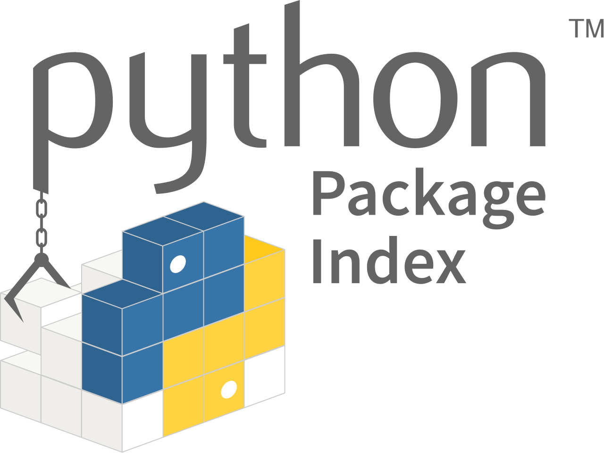
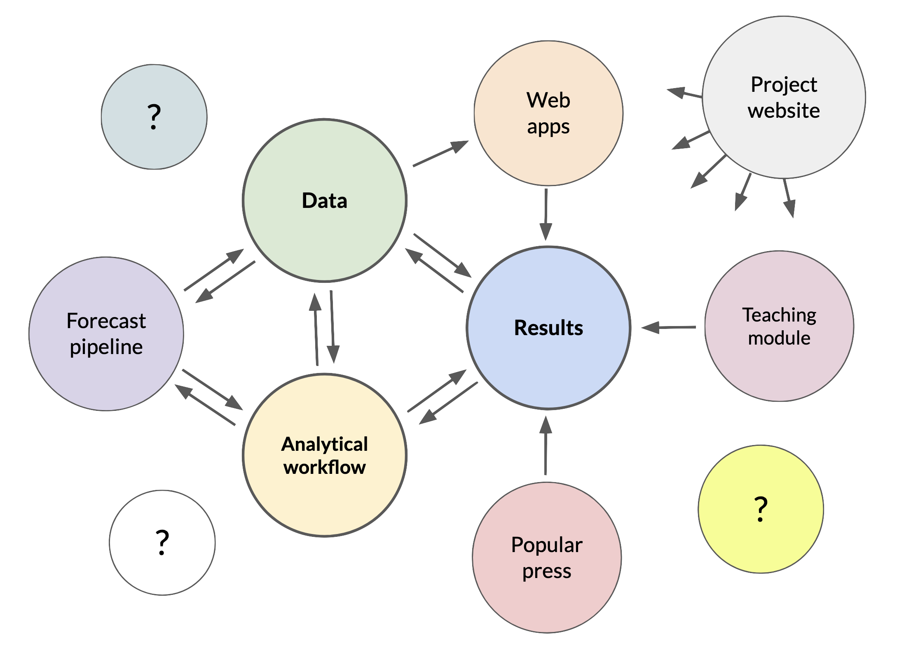

Tying It All Together
Learning Objectives
After completing this module, you will be able to:
- Identify the three primary “products” that come out of synthesis groups.
- Understand the metadata and other features that make published datasets useful.
- Evaluate the reach and reproducibility of an ecological synthesis project’s outputs.
- Create a plan for your synthesis team’s research products that applies contribution, publishing, and citation practices that will benefit the team.
Introduction
So far in the course, we’ve made the point that ecological synthesis research benefits from an inclusive, team-based approach to science, and that teams should use effective, collaborative methods to integrate and analyze their data. Synthesis research is also intended to be influential and useful. There are many definitions of “influential and useful” to consider here, but successful ecological synthesis teams typically aim to expand our understanding of ecological systems, and to improve human lives and the environment.  Their ability to accomplish this frequently depends on what research products are created, and how those are communicated and shared with the outside world.
Their ability to accomplish this frequently depends on what research products are created, and how those are communicated and shared with the outside world.
“Research products” can be defined broadly, but there are three interconnected, publishable products that are the most common outputs from a synthesis project (or any research project, really): the data, analytical workflows (code for data cleaning or statistics, for example) and research results. Each of these is a valuable product of synthesis science, and each one should reference the others. In this module we’ll discuss the mechanics of publishing each one, and how they can be made accessible and useful for the long-term.
Publishing a synthesis dataset
In Module 2 we discussed some considerations for creating and formatting harmonized data files in synthesis research. We also introduced the importance of metadata for describing data and making it more usable. Publishing harmonized data files and descriptive metadata together as a dataset helps ensure that the data products produced by a synthesis team are findable, accessible, interoperable, and reusable (FAIR). FAIR data are an important outcome for most ecological synthesis projects.
The FAIR principles, standing for Findability, Accessibility, Interoperability, and Reusability, are a community-standard set of guidelines for evaluating the quality and utility of published research data. Making an effort to meet the FAIR criteria promotes both human and machine usability of data, and is a worthy objective when preparing to publish data from a synthesis research project.
The FAIR principles were first defined in the paper by Wilkinson et al.(2016). Since this time, many resources have arisen to guide the implementation of the FAIR principles1 and to quantify FAIR data successes and failures in the research and publishing communities (Bahim et al. 2020; Gries et al. 2023).
Activity 1: Evaluate published datasets
Lets start our journey to publishing datasets by looking at some that are already published. Form breakout groups and course instructors will assign each group a dataset for evaluation. With your group, answer these questions about the dataset:
- Where were the data collected?
- What variables were measured and in what units?
- What is the origin of the data and how have they been altered since collection?
- Were the first three questions easy to answer? Why or why not?
Example dataset: Jarzyna, M.A., K.E. Norman, J.M. LaMontagne, M.R. Helmus, D. Li, S.M. Parker, M. Perez Rocha, S. Record, E.R. Sokol, P. Zarnetske, and T.D. Surasinghe. 2021. temporalNEON: Repository containing raw and cleaned-up organismal data from the National Ecological Observatory Network (NEON) useful for evaluating the links between change in biodiversity and ecosystem stability ver 1. Environmental Data Initiative. https://doi.org/10.6073/pasta/7f0e0598132e3fea1bfd36a4257af643.
Example dataset: Gutenson, J. (2025). Yellowstone Synthetic Rating Curve Analysis. HydroShare. http://www.hydroshare.org/resource/c8388cc25940447296c0cd8eea58d97a
Example dataset: Craine, Joseph M. et al. (2019). Data from: Isotopic evidence for oligotrophication of terrestrial ecosystems [Dataset]. Dryad. https://doi.org/10.5061/dryad.v2k2607
Example dataset: Wieder, W.R., D. Pierson, S.R. Earl, K. Lajtha, S. Baer, F. Ballantyne, A.A. Berhe, S. Billings, L.M. Brigham, S.S. Chacon, J. Fraterrigo, S.D. Frey, K. Georgiou, M. de Graaff, A.S. Grandy, M.D. Hartman, S.E. Hobbie, C. Johnson, J. Kaye, E. Snowman, M.E. Litvak, M.C. Mack, A. Malhotra, J.A.M. Moore, K. Nadelhoffer, C. Rasmussen, W.L. Silver, B.N. Sulman, X. Walker, and S. Weintraub. 2020. SOils DAta Harmonization database (SoDaH): an open-source synthesis of soil data from research networks ver 1. Environmental Data Initiative. https://doi.org/10.6073/pasta/9733f6b6d2ffd12bf126dc36a763e0b4
Example dataset: Woods, B., Trebilco, R., Walters, A., Hindell, M., Duhamel, G., Flores, H., Moteki, M., Pruvost, P., Reiss, C., Saunders, R., Sutton, C., & Van de Putte, A. (2021). Myctobase (1.1) [Data set]. Zenodo. https://doi.org/10.5281/zenodo.6131579
Example dataset: Ross, C.W., L. Prihodko, J.Y. Anchang, S.S. Kumar, W. Ji, and N.P. Hanan. 2018. Global Hydrologic Soil Groups (HYSOGs250m) for Curve Number-Based Runoff Modeling. ORNL DAAC, Oak Ridge, Tennessee, USA. https://doi.org/10.3334/ORNLDAAC/1566 (2018)
Designing your dataset
The overall design of a dataset to be published is often difficult to imagine, especially for newcomers. One of the most common questions data managers hear is “What should we publish?” This is usually a question about what files to include in the published dataset, or what data will be useful as a published dataset. Every dataset is different, but the answer often depends where your data fall on the Raw → Ready → Results spectrum.
- Raw refers to “source data” that have not been altered very much from their original state at collection. They have undergone no, or minimal, QA/QC, filtering, reformatting, and other changes.
- Ready data are derived from raw data and are made ready for analysis with cleaning, filtering, reformatting, summary statistics, joining with other data, and other changes.
- Results data are the product of a planned analysis. Often these are the data used to produce figures and statistics for a journal article or other research product.
Synthesis groups typically rely on previously-published datasets as their raw, or source, data and therefore usually publish ready and results datasets. Activity 1 provided a few examples of well-designed (and not-so-well-designed) synthesis datasets. Lets review what we saw there.
What should be included in a published dataset?
- To publish a harmonized synthesis dataset (ready data), follow the guidance in Module 2 about preparing the data so it is most useful to your team and others (use simple data structures, open file formats, community-accepted data standards, etc.).
- When publishing a dataset for an analysis of your team’s synthesis data (results data, such as for a journal article), include any derived data files that were used to generate figures, statistics, and other research results being reported on.
- It is ok to include numerous data files in one dataset as long as they are related to each other, they are well-described, and their purpose is clear (see the points about metadata below).
We’ll talk about the details of metadata below, but you should always include descriptive metadata with your data files. There are many ways to do this and it may depend on the repository you will publish to.
- Some repositories accept standardized metadata files and some have form-based metadata editors that can be used to enter metadata during the submission of a dataet.
- It is ok to also include separate metadata files in the form of text files, MS Word documents, PDF files, and other formats, with your published dataset if additional metadata is necessary.
- Many repositories don’t require much metadata, but it is a good idea to provide it anyways. Your colleagues and your future self will thank you.
A few other things may be included in published datasets that don’t necessarily fall into the data or metadata categories.
- Often it makes sense to ensure the reproducibility of research results by publishing a workflow with the data. Usually this means publishing code files, such as scripts written in R, python, or a shell language, in the dataset with results.
- The workflow for generating a harmonized synthesis dataset, especially detailed, reusable workflows like an R package, can often stand alone as an independent publication. We discuss that in a later section.
- Some repositories may include additional files with published datasets such as quality reports, manifests, and other contextual information about the dataset.
These are general guidelines, but for more advice on what to include in a published dataset you can also look to repositories like EDI and BCO-DMO, or a research network like NEON. Asking a data manager, especially one involved with your synthesis group’s work, can also be helpful, as will discussion among the full synthesis team.
Metadata
Another thing that Activity 1 introduced is the importance of metadata. Metadata are data about the data. As a general rule, metadata should describe
- Who collected the data
- What was observed or measured
- When the data were collected
- Where the data were collected
- How the data were collected (methods, instruments, etc.)
- Sometimes, stating why the data were collected can help future users understand data context and evaluate fitness for use.
Including metadata of this nature makes data more usable, and helps prevent the deterioration of information about data over time, as illustrated in the figure below.

Data Provenance Metadata
Provenance metadata deserves special attention for ecological data synthesis projects. Data provenance refers to information detailing the origin of the values in a dataset, which is important for synthesis projects that bring together data from many different sources. Synthesis activities typically produce new data products that are derived from the original source data after they have been cleaned, harmonized, and analyzed. Provenance metadata should be included with the derived products to point back to the original source data, similar to the way bibliographic references point to the source material for a book or scholarly article.
A few other notes on provenance:
- Documenting your data sources in a log file or spreadsheet as you collect and analyze them is a great way to start gathering the provenance metadata you need.
- Many data repositories provide guidelines, tools, and features for data provenance metadata2.
- Provenance metadata can become very detailed if the software and computing environment is also taken into account. This is an active area of study 3.
Licensing
Published datasets should include a license in every copy of the metadata that defines who has what rights to use, reproduce, or distribute the data. Licensing decisions should be made in consultation with the synthesis team after considering the nature of the data (does it contain human subject data, for instance?), its origin (including restrictions on source data, if applicable), where the data will be published and used (different countries have different intellectual property and copyright laws), and the requirements of the funders and institutions associated with the project. There are quite a few guides available online that can help your group make a decision.4 For publicly-funded research data, it is generally appropriate to use open licenses, and the Creative Commons CC-BY attribution, and CC0 public domain, licenses are probably a good choice for most ecological synthesis data. This is not legal advice and your mileage may vary.
Metadata Creation and Management
Assembling metadata should be an integral part of the data synthesis activities discussed in Module 2, and can even be built into the workflows and project management practices the synthesis team uses. Make sure to plan for and start creating metadata early. Below are a few ways to do that.
- Keep a detailed project log and populate it with metadata for the project, including information like:
- what source data the team is using and where they came from
- how source data are being harmonized for analysis
- data analysis steps and methods used to create figures,statistics, and derived data products
- who is doing what
- Start creating distinct publishable datasets (data plus metadata) as data are processed and analyzed. The team can do this:
- locally, using a labeled directory for the cleaned, harmonized, and derived data, along with related code and metadata files. Metadata files may be plain text, or use a metadata template.
- with a repository-based metadata editor, such as ezEML from the Environmental Data Initiative (EDI) repository.
- Get a professional data manager or data curator involved with the synthesis project. For example, the LTER Network has a community of “Information Managers” 5 trained in data management, metadata creation, and data publishing. Research data repositories and academic libraries often have professional data curators on staff who are well-trained and can advise researchers on community metadata standards and best practices for data publishing.6
Reproducibility and the creation of metadata are closely related. Your team’s detailed documentation of the research process allows for reproducible science, and can be mined as a source of metadata when you prepare data for publication.
Choosing and Publishing to a Repository
There are a multitude of research data repositories available to researchers now7, which can make choosing where to publish data feel overwhelming. A few basic data repository features are essential when publishing a synthesis dataset. First, the repository should issue persistent, internet-resolveable, unique identifiers for every dataset published. Generally this will be a Digital Object Identifier, or DOI, that can be cited every time the dataset is used after publication. Second, repositories should require, and provide some means to publish, metadata describing each dataset. Without requiring at least minimal metadata, no repository can ensure that published data are FAIR. Finally, research data repositories should be stable and well supported so that data remain available and usable in perpetuity. Choosing a repository from the CoreTrustSeal certified repository list is one way to assess this. Beyond this, asking a few questions about the dataset will help with repository selection:
- Who are the likely users for this data? Will they belong to a specific scientific discipline, research network, or community of stakeholders?
- How specialized are your data? Do they fall into a common data type or follow a special formatting standard?
- Will the data be updated regularly?
- Does the repository charge for publication?
- Will the dataset benefit from some level of peer review?
More specialized repositories tend to offer enhanced documentation, custom software tools, and data curation staff that will review submitted data and assist users with data publication. Selecting a data repository with metadata requirements or standards, and a review and curation process for submissions, will help ensure that you are publishing a more FAIR data product. Consulting a project data manager if one is available to the synthesis team also helps with repository selection. After making a choice, the process of publishing data varies from repository to repository.
Additional Data Publishing Resources
Sharing the Team’s Workflow
One of the most valuable, shareable outputs of synthesis research is the analytical workflow used to derive datasets and produce scientific results. Most often, these workflows are written in computer code, such as R, Python, or another language. The code may consist of a collection of scripts, or they may be organized into stand-alone modules or libraries. The latter is easier to share and re-use, but requires more advanced knowledge of software design. Code can be published in a repository (see the options below) with a DOI issued for particular versions of the code, which allows the workflow and code to be cited by the research products that they were used to generate. Ecological forecasting projects are one good place to look for example workflows (e.g. White et al. 2019), but the practice of publishing workflows is generally applicable to synthesis research.
Sharing and citing workflows and code are an essential element of reproducible science because doing so:
- describes the exact process used to prepare and analyze data.
- provides a reproducible method to integrate or analyze new data.
- allows other scientists to verify results.
Even for people who will not directly use the code, a published workflow provides information about:
- the origin of the data.
- methods for data cleaning, harmonization, analysis, and presentation of results (figures).
- how the workflow was developed or changed over time.
- the contributions made by the team.
What features of published code would let you assess whether it is useful for your purposes?
- Clear documentation and examples provided
- Commenting in the code
- Tests and build indicators
- Publication in a repository that provides review (more on this below)
In other parts of the course, we have strongly recommended using version control and collaboration platforms, particulary GitHub. GitHub’s platform provides several options for sharing & publishing code, but lets explore some others too.

GitHub is huge and widely used for sharing code (among many other services). In combination with other software and services, GitHub can be reliably used to publish scientific code in a reproducible way.
Some features:
- Zenodo integration is already included in GitHub,8 which makes it fairly easy to publish a repository with a DOI.
- Large array of features for managing contributions and sharing of the code

The NEON Code Hub is a good example of a research network focused code repository.
Some features:
- Focus is on code useful for working with NEON data.
- Review and placement of submitted code.

ROpenSci publishes R packages for scientific applications.
Some features:
- Wide array of R packages useful for working with scientific data.
- Team provides review and vetting of the code before publication.
- Most packages also go to CRAN.

The Python Package Index (PyPI) is the most widely used venue for publishing Python packages.
Some features:
- Python compatibility checks are performed and metadata about the code resource are required.

The Comprehensive R Archive Network (CRAN) is a widely used resource for publishing R packages.
Some features:
- R compatibility checks are performed and metadata about the code resource are required.
Peer review is valuable for all research outputs. We expect a peer review process for journal articles, but published datasets and code can undergo peer review as well. As with manuscripts, the review process for data and code leads to higher quality, more useful products.
Communicating Research Results
One of the primary goals of synthesis research is to find useful, generalizable research results about the system under study. Most often this means writing scientific journal articles. While we aren’t going to go into full detail about what constitutes, or how to write, a manuscript for a journal, there are some unique features of writing articles for synthesis projects. First, data papers are often an important product for synthesis groups, and these are somewhat different than standard research journal articles. Second, given, the large size and cooperative nature of most synthesis teams, a collaborative writing process is called for. An appropriate collaborative writing method, and some team norms and contribution guidelines, should be in place to reduce the potential for conflict or mistakes.
Data papers
A data descriptor article, usually known as a data paper, is a peer-reviewed journal article written to introduce and describe a (usually) new dataset. For synthesis teams, who are often producing a harmonized dataset as their first major research product, writing a data paper to accompany the dataset makes sense as a way to introduce the data, demonstrate their utility, and get the word out about the dataset. Data papers also lay the groundwork for any future papers that will answer the science questions of interest to the synthesis team.
Data papers may be simpler and shorter than research articles (not always though), but there are still a few gotchas that can arise. Below are some recommendations, and the rationale behind them.
- Publish the dataset described by the data paper in a reputable data repository.
- Although some publishers host the data described in a data paper themselves, this is often as supplementary material to the article, and sometimes the data are only held for review. Most data-focused journals require that accepted data papers should describe and reference a dataset published in a research data repository. Follow the guidance above to select a repository and prepare the dataset for publication.
- Be sure to cite the data paper and the dataset properly.
- The existence of a data paper and a dataset, each describing the same data and each with its own DOI, can create confusion about what to cite in related works. If the novelty and utility of the dataset, or the methods used to assemble it, are being referenced by a related work, then it may be most appropriate to cite the data paper. If the actual data are being used (analyzed, interpreted, etc.) in a related work, then definitely cite the published dataset. In many cases it is expected to cite both.
- Don’t shortchange the metadata in the published dataset just because there is also a data paper.
- Consider the future usability of the data the data paper describes, and ensure that the associated published dataset contains detailed, community-standard metadata. Not all users will find or be able to access the data paper, and data paper publishers may have incomplete or quirky requirements for metadata.
Some examples of data papers related to synthesis projects:
- Komatsu, Kimberly J., et al. “CoRRE Trait Data: A dataset of 17 categorical and continuous traits for 4079 grassland species worldwide.” Scientific Data 11.1 (2024): 795. https://doi.org/10.1038/s41597-024-03637-x
- Wieder, William R., Derek Pierson, Stevan Earl, Kate Lajtha, Sara Baer, Ford Ballantyne, Asmeret Asefaw Berhe et al. “SoDaH: the SOils DAta Harmonization database, an open-source synthesis of soil data from research networks, version 1.0.” Earth System Science Data Discussions 2020 (2020): 1-19. https://doi.org/10.5194/essd-13-1843-2021
- Zhang, Liang, Edom Moges, James W. Kirchner, Elizabeth Coda, Tianchi Liu, Adam S. Wymore, Zexuan Xu, and Laurel G. Larsen. “CHOSEN: A synthesis of hydrometeorological data from intensively monitored catchments and comparative analysis of hydrologic extremes.” Hydrological Processes 35, no. 11 (2021): e14429. https://doi.org/10.1002/hyp.14429
A few suggested venues for publishing data papers:
- Scientific Data (Nature Publishing Group)
- Data (MDPI)
- PLOS ONE (usually termed “database papers”)
- The ESA journal Ecology, and quite a few other disciplinary journals, now publish data papers.
GBIF also maintains a helpful list of data paper journals.
Writing collaboratively
Writing a paper with a large team can be a challenge. It is important to encourage team members to contribute in a way they are comfortable with, but there is the potential for technical, editorial, and personal conflict without some prior planning. Practically, there are two models for writing a manuscript with a bunch of contributors.
In this model manuscripts live mainly in web-based writing platforms managed by a cloud service provider (e.g. Google Docs) and all contributors write and edit the document within that platform. Contributions may be asynchronous or synchronous since version control and conflict resolution is generally built into the platform. Most platforms have additional collaboration features, such as user account management, suggested edits, and commenting systems.
Software platform: Google Docs, Microsoft 365 Online, Authorea, Overleaf (LaTeX)
Pros: Strong collaboration features (user/permission management, contribution tracking, comments and suggestions). No need to distribute copies and then merge contributions.
Cons: Can be unfamiliar to senior contributors. Easy to lose track of links. Limited formatting features compared to local word processors. Privacy/tracking concerns.
This model relies on word processing software installed on contributors’ local machines. Copies of the manuscript are distributed to contributors for asynchronous writing and editing assignments, and contributions are then merged together into a synchronized version of the manuscript. In large teams, it may be best to have one person managing the copy/merge process.
Software platform: Microsoft Word (usually), email
Pros: Familiar to most. Integrates with local data management practices. Most word processors have powerful collaboration and versioning features now. Advanced formatting and editing. Less reliance on cloud providers.
Cons: License pricing and institutional availability may be limited. Multiple versions in use, and the copy/merge workflow can easily generate conflicts or become unmanageable in large groups.
In addition to these practical considerations, there are some team considerations as well
- Make the expectations for contributing to a manuscript clear.
- How, when, and where should contributions be made
- Authorship expectations discussed in advance
- Make space for new, or early-career team members to contribute.
- Efficiency and experience level aren’t good reasons to exclude contributors
- Synthesis papers are a great learning experience and career opportunity
- Team discussions are preferable to unilateral editorial decisions.
- This can help avoid hurt feelings during the editing process.
- It can be beneficial to have a manuscript coordinator.
- The coordinator can help split up writing and editing tasks equitably
- Someone needs to manage conflicts, check for consistency, make some executive decisions, etc.
- Often this is the lead author
Connecting the Pieces
We’ve now covered how a synthesis team should approach creating and publishing its main research outputs (data, code, research results). Now we’ll discuss how to begin making these useful to the world, which starts with making sure the products of synthesis research point to each other. Lets begin with an activity.
Activity 2: Synthesis project detective
Form breakout groups and course instructors will assign each one a link to a product from a synthesis project (the code, a paper, a dataset, etc.). Using any means necessary (metadata, web search, etc.) figure out what other products are part of the same project (related publications, source/derived data, etc.) and who is involved in the synthesis team. Answer these questions as a group:
- If your group received a link to a paper, were you able to find datasets and a code repository (for an analytical workflow)?
- If your group received a link to a code repository, were you able to find papers and datasets?
- If your group received a link to a dataset, were you able to find papers and a code repository?
- Who was involved in the synthesis project?
- Could you understand the overall scope and impact of the synthesis project? Why or why not?
More ways to synthesize

We’ve talked about the three most common products of synthesis: papers, datasets, and workflows. But, we’ve also seen that there are plenty of other ways to share synthesis research! Education and outreach can become an important goal in for some synthesis teams, and providing access to data and actionable research results, such as forecasts, can be very useful to stakeholders. As time goes on, synthesis teams may produce many things that meet these goals and needs, moving well beyond the three kinds of products we’ve already talked about. See below for a few ideas and examples.
Synthesis research produces new scientific knowledge that other researchers, students, or stakeholders can learn and build on. Synthesis can also generate applied-science tools and methods that others need to learn how to use for themselves. Teaching modules are an important way of sharing both of these outcomes, and of broadening the reach of a synthesis project.
Examples:
- The EDDIE project is a clearinghouse of contributed teaching materials for the earth and environmental sciences.
- This website is an example of teaching materials produced by a synthesis team.
Interactive web applications can provide users with easy access to scientific datasets, especially large ones, analytical results, visualizations, interpretation, and many other things. Creating web apps is not necessarily an easy task, but if your synthesis team has the expertise, or access to web developers, web apps may be useful for outreach, or as tools the synthesis team itself can use. Frameworks like Shiny (for R), Streamlit, or Flask (both for python), and services like Shinyapps.io and Plotly, can make creation of apps relatively painless.
Examples
- An app for finding and exploring ecocomDP data in the NEON and EDI repositories.
- A dashboard app for the NEON ecological forecasting challenge.
- The Jornada LTER interactive viewer for weather station data.
Some research efforts have developed automation systems for research data processing, analytics, and publishing. These often fall into the “continuous integration/continuous deployment” class of web-enabled software and data pipelines, in which one software processes (data processing, analytics, publication, etc.) may be automatically triggered by events that occur in another, connected software service (such as adding new data to a GitHub repository). These technologies enable researchers to build software pipelines that can be useful for quality control of new data, updating forecasts, and rapid deployment of data or analysis products.
Examples:
- The Portal Project in southeast Arizona has developed a well-described near-term ecological forecasting pipeline (also described in White et al. 2019).
- Automated quality control of dendrometer band data.(Kim et al. 2022)
- Forecasting Lake and Reservoir Ecosystems (FLARE) project.
At a certain point, the outputs of a synthesis project can become numerous and challenging to present to the public in an organized way. Project websites can serve as a gateway to an entire synthesis project by providing comprehensive listings of project outputs (papers, datasets, GitHub repositories, etc), participants and data contributors, a narrative for the research, appealing images or graphics for outreach, and links to related projects, funders, or institutions. Websites built with GitHub Pages are a common solution for creating simple, cost-effective (free, usually) project websites nowadays, but there are other options. A good project website can become a cohesive, engaging clearinghouse for information about a synthesis project, but they can be laborious to create and keep up-to-date.
Examples:
Linking synthesis products together
Reflecting on all the information above, we can see one common feature of the many different products of a synthesis team: they exist primarily as digital objects on the internet. The internet may seem fluid and ephemeral, but fortunately there are ways to identify and connect these digital objects in a stable way.
Persistent identifiers
Persistent identifiers, or PIDs, are references to digital objects or identities that are intended to last a long time. To be useful on the internet, PIDs should be unique, i.e. having a 1:1 relationship between the PID and the digital object, and machine actionable, meaning they can be understood by software like web browsers. There are many different types of PIDs, but the most useful ones in the context of publishing research products are:
- Digital Object Identifiers (DOI), used to identify digital publications like journal articles, datasets, or governement reports.
- Open Researcher and Contributor ID (ORCID), used to identify individuals, usually in the context of research or publishing activities.
- Research Organization Registry (ROR), used to identify organizations, also in the context of research and publishing, primarily.
These identifiers can and should be associated with all journal articles and published datasets resulting from synthesis projects. DOIs and ORCIDs can easily be associated with GitHub and other code repositories as well.
Citing synthesis products
The best way to ensure that use of a research product is recognized is through proper citation. This is already common practice for journal articles, but is only recently being adopted for published datasets. The most logical place in an article to cite a published dataset is in the Methods section and in the Data Availability Statement, which most reputable journals now require. Be sure to check journal data sharing requirements and begin preparing for data publication well in advance of article submission. When citing datasets, be sure that the full bibliographic entry is correctly included in the article’s reference list. Citation of code is not as widely practiced, but some journals require it and it is a best practice.
In the Data Availability Statement from Currier and Sala (2022), note that source datasets are properly cited in the Data Availability Statement, meaning an in-text citation is given and the full bibliographic entry is provided in the article reference list (not shown). The DOIs included here are helpful for quickly finding the data.
All original and derived phenology data produced by the authors, and R scripts for data processing, statistical analyses, and figure production are publicly available in the Environmental Data Initiative (EDI) repository. EDI package knb-lter-jrn.210574001.2 (Currier & Sala, 2022a) contains daily phenocam image data, derived timeseries and associated scripts for processing and is available at https://doi.org/10.6073/pasta/836360dce9311130383c9672e836d640. EDI package knb-lter-jrn.210574002.2 (Currier & Sala, 2022b) contains observed phenological indicators and environmental drivers as well as associated scripts for final analyses and figure construction presented in this manuscript and these data are available at https://doi.org/10.6073/pasta/d327a77f6474131db8aa589011e29c29. No novel code was generated by the authors of this manuscript. The precipitation data used in all analyses are derived from G-BASN data in EDI package knb-lter-jrn.210520001 (Yao et al., 2020) available at https://doi.org/10.6073/pasta/cf3c45e5480551453f1f9041d664a28f. Daily air temperature summaries from 4 June 1914 to the present for the Jornada Experimental Range Headquarters (NOAA station GHCND:USC00294426) are freely available upon request via the National Ocean and Atmospheric Administration (https://www.ncdc.noaa.gov/cdo-web/datasets/GHCND/stations/GHCND:USC00294426/detail).
Although conventions are changing, it is still common to find data availability statements that introduce barriers to data access or reproducibility. Often they are worded along these lines:
Data used in the figures are included in the supplementary material. The full dataset will be provided upon reasonable request to the corresponding author.
Maintaining Momentum
As we discussed in Module 1, starting a synthesis project benefits from motivating scientific questions, a well-planned foundation for team science, and significant activation energy from the team. When successful, synthesis projects gather enough momentum to be productive for many years. Below are a few ideas on how to maintain this momentum.
Give everyone credit
Everyone deserves credit for the work they do, and in academic environments this is too often overlooked. Synthesis working groups commonly begin without any dedicated personnel support, which means that some participants, usually early-career scientists, will be contributing unpaid time to the project. In the absence of pay, leaders of a synthesis team should take the initiative to make sure everyone receives appropriate credit and opportunities for career advancement when they contribute to the project. Below are a few thoughts on how to do that.
- Discuss and define in advance some of the contributions team members will make.
- This is particularly important for deciding authorship of journal articles.
- The CRediT framework is a good starting point.
- More detail on this is in Module 1.
- Be willing to credit participants for a wide variety of contributions.
- This includes writing code, cleaning data, taking meeting notes, and more.
- Make sure all contributors have an ORCID. They are easy to obtain and widely used.
- Use ORCIDs to associate contributors with a research product whenever possible.
- List contributors on websites, GitHub repositories, and other public-facing team materials.
- Its nice to include affiliations, bios, links to profile pages, and other information too.
- Don’t rely on any one metric for valuing contributions to the team.
- Code commits in GitHub, for example, may reflect the input of many people besides the one that actually wrote and committed the code.
- Don’t forget students, technicians, early-career scientists, and others.
- Don’t forget to put your name on your work!
What are we missing here?
Encourage new contributions
Interests and commitment to synthesis projects change over time. To sustain active research contributions by the team, and continued use of the data, make sure new people can find a way to participate.
- Provide a path for new data contributions.
- Consider adding a “How to contribute” section to a project website or GitHub repository README.
- Making your synthesis project’s data preparation/harmonization workflow reproducible and well-documented will make it easy for new data contributors.
- Have open meetings when possible.
- This helps bring in new team members that are interested and willing to contribute.
- Give all team members the freedom and support to lead analyses, papers, and other valuable project activities.
Find support
Maintaining momentum for a synthesis project over the long term is highly dependent on the ability to keep scientists engaged and find support for dedicated personnel time. Usually this means getting monetary support in the form of grants.
- Explore and apply to the funding sources presented in Module 1.
- Personnel support may need to come from larger grants since working group funding often provides only meeting support.
- Think creatively about how to get students and postdocs participating in synthesis projects.
- If student/postdoc research interests & plans overlap, dedicating some time to synthesis group work can lead to career-building opportunities (networking, high-impact papers).
- Promote the synthesis team’s work!
- It is difficult to attract interest from new participants and new resources for a project without doing this.
HAVE FUN!
When done correctly, ecological synthesis research means having lots of fun doing science with a great team.
References
Footnotes
The GO FAIR Initiative’s “How to GO FAIR” and the FAIR Cookbook are two examples of implementation guides.↩︎
The EDI repository’s provenance metadata documentation is an example applicable to publishing with the EML metadata standard. Other metadata standards and repositories have different systems.↩︎
See Lerner et al. (2023) or resources at the End-to-End Provenance project.↩︎
Both the Creative Commons (CC) and the Open Knowledge Foundation (OKF) have extensive documentation about licensing data in different contexts, including the CC data FAQ and OKF’s Open data definition. The CC license chooser is a quick and easy way make a licensing choice once you understand your options.↩︎
Here is a list of LTER Information Managers↩︎
The Data Curation Network is a professional membership organization for data curators.↩︎
The Registry of Research Data Repositories (re3data.org) project is a comprehensive tracker of information about research data repositories.↩︎
The process of publishing a GitHub repository release to Zenodo is covered in the GitHub and Zenodo documentation, and other places.↩︎